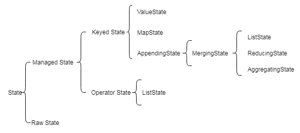

Ch07-Flink 之 State
December 20, 2020
State 指一个具体的 task/operator 的状态，State Backends 指具体状态的存储介质
1. State #
state 本质上有点像分布式缓存，用来存储 task/operator 的状态。

1.1 Managed State VS Raw State #
Managed State 是 Flink 自动管理的 State，而 Raw State 是原生态 State。
| 区分角度 | Managed State | Raw State |
|---|---|---|
| 从状态管理方式来说 | 由 Flink Runtime 管理，自动存储，自动恢复，在内存管理上有优化 | Raw State 需要用户自己管理，需要自己序列化，Flink 不知道 State 中存入的数据是什么结构，只有用户自己知道，需要最终序列化为可存储的数据结构 |
| 从状态数据结构来说 | 支持已知的数据结构，如 Value、List、Map 等 | 只支持字节数组，所有状态都要转换为二进制字节数组才可以 |
| 从推荐使用场景来说 | 大多数情况下均可使用 | 比如需要自定义 Operator 时，推荐使用 Raw State。 |
1.2 Keyed State VS Operator State #
Managed State 分为两种，一种是 Keyed State；另外一种是 Operator State(Non-Key State)。
在 Flink Stream 模型中，Datastream 经过 keyBy 的操作可以变为 KeyedStream。在 Flink Stream 模型中，Datastream 经过 keyBy 的操作可以变为 KeyedStream。每个 Key 对应一个 State，即一个 Operator 实例处理多个 Key，访问相应的多个 State，并由此就衍生了 Keyed State。
| 区分角度 | Keyed State | Operator State |
|---|---|---|
| 从使用方式来看 | 只能用在 KeyedStream 的算子中，即在整个程序中没有 keyBy 的过程就没有办法使用 KeyedStream | 可以用于所有算子，相对于数据源有一个更好的匹配方式，常用于 Source |
| 从访问角度来看 | 通过 RuntimeContext 访问，这需要 Operator 是一个 Rich Function | 需要自己实现 CheckpointedFunction 或 ListCheckpointed 接口 |
| 从数据结构来看 | 支持较多的数据结构 | 支持较少的数据结构 |
注意：
- Keyed State 跟 KeyedStream 绑定（ValueState, MapState, ListState, ReducingState, AggregatingState）
- Operator State 由 Operator 自行管理 (ListState, UnionListState, BroadcastState)
2. State Backends #
目前支持的 State Backends 有
| StateBackend | in-flight | checkpoint | 吞吐 | 推荐使用场景 |
|---|---|---|---|---|
| HashMapStateBackend | TaskManager Memory | JM Memory | 高 | 调试、无状态或对数据丢失或重复无要求 |
| RocksDBStateBackend | RocksDB on TaskManager | FS/HDFS | 低 | 超大状态、超长窗口、大型 KV 结构 |